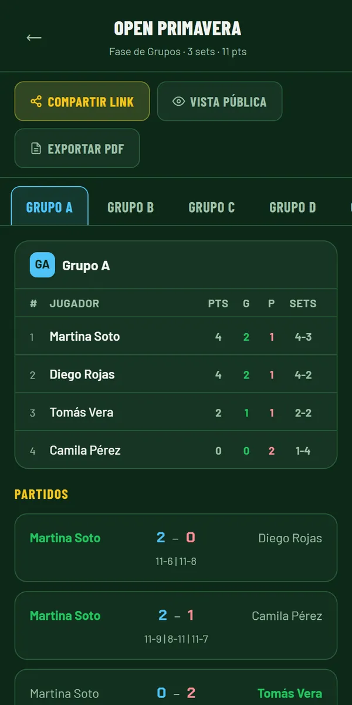
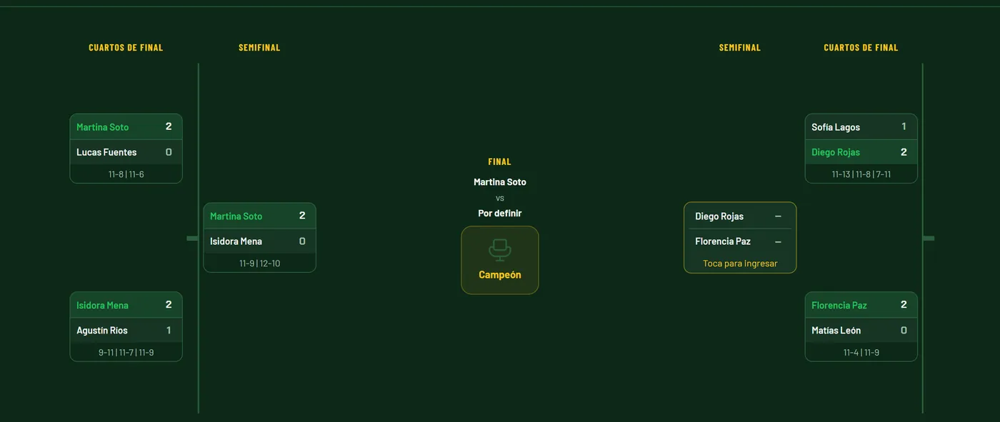
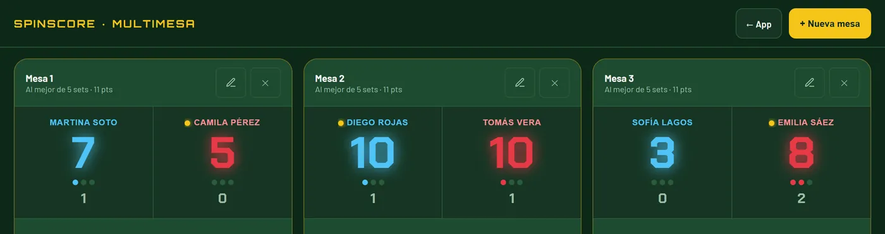

Tenis de mesa · Reglas ITTF
Cada puntocuenta.
Lleva el marcador desde el celular y organiza ligas, grupos y cuadros eliminatorios sin papel ni planillas. Saque, deuce y tarjetas se calculan solos.
- Gratis
- Sin registro
- Funciona sin conexión
Así se ve un partido en curso en SpinScore.
- Saque automático
- Deuce
- Tarjetas
- Ligas
- Grupos
- Cuadro eliminatorio
- Multimesa
- Sin conexión
Cuatro formas
de jugar
Desde un partido en el patio hasta el torneo del club con categorías. Elige el formato de sets y puntos una vez y la app se encarga del resto.
-
01
Partido rápido
Dos jugadores, un toque por punto. Sets de 7, 11, 15 o 21 puntos.
-
02
Liga
Todos contra todos, con tabla de posiciones y podio al final.
-
03
Grupos + cuadro
Sorteo en grupos, clasifican los dos primeros y el cuadro se arma solo, con BYE si hace falta.
-
04
Multimesa
Varios marcadores en una sola pantalla, para cuando se juega en muchas mesas a la vez.
Hecho para usarse
junto a la mesa
Números grandes, deshacer a mano y el saque siempre a la vista. En el computador, el cuadro completo del torneo.




Los detalles que
un árbitro nota
Las reglas que más discusiones generan en la mesa, resueltas por la app.
Saque automático
Cambia cada 2 puntos y, desde el deuce, en cada punto. Puedes elegir quién saca primero.
Tarjetas amarilla y roja
La roja suma el punto al rival. Mantén presionado el botón para ver la regla.
Deshacer cualquier acción
Incluso el punto que cerró un set o una tarjeta. El botón dice qué vas a deshacer.
Desempate ITTF
Primero el enfrentamiento directo entre empatados, después sets y puntos.
Link para los jugadores
Comparte grupos y cuadro en solo lectura. Se abre en cualquier celular, sin instalar nada.
Sin conexión
Instálala desde el navegador y funciona en el gimnasio aunque no haya señal.
¿Listo para el
primer saque?
Gratis y sin registro. Se abre en el navegador.